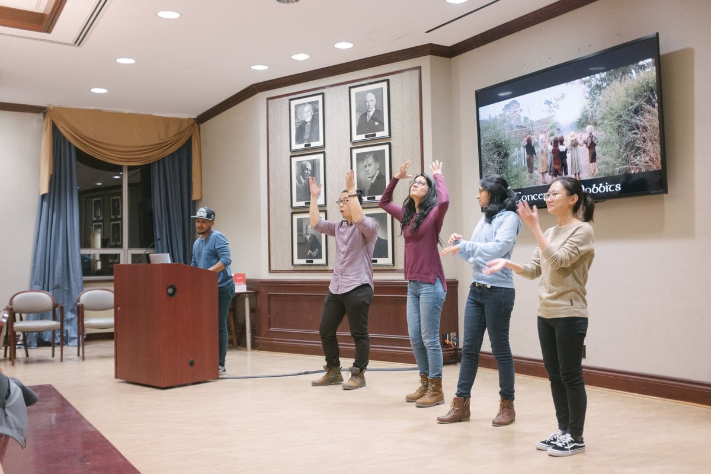

The Game is a project-based, social innovation learning experience by the Institute for Leadership Education in Engineering at the University of Toronto. Students work in teams and pick issues they would like to address. The focus is on encouraging students to work with ambiguity, be open to diverse perspectives and experience what it takes to effect social change. Each team is assigned a mentor from the community to help guide them on this journey. One of the main questions this initiative challenges participants to figure out is: How do I work with myself and others using effective tools and frameworks to create meaningful change?
My team and I are taking a look at stigma related to mental health and access to resources on campus specifically for international students whose first language is not english. We initially had a scope of looking at stigma on the university level and then after interviewing students and members from the Health & Wellness team at the University we found the above niche that we concluded was an area that had not been looked into a lot. The picture above is from our midpoint presentation where we presented our journey thus far using poetry and physical expressions. The project continues on into the 2017 winter semester.